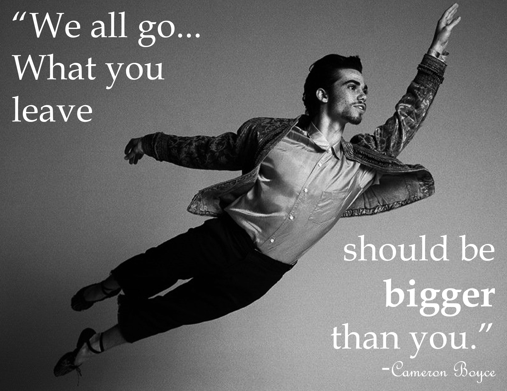
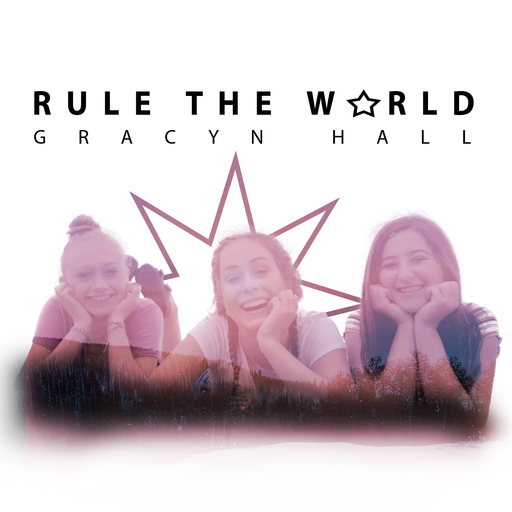
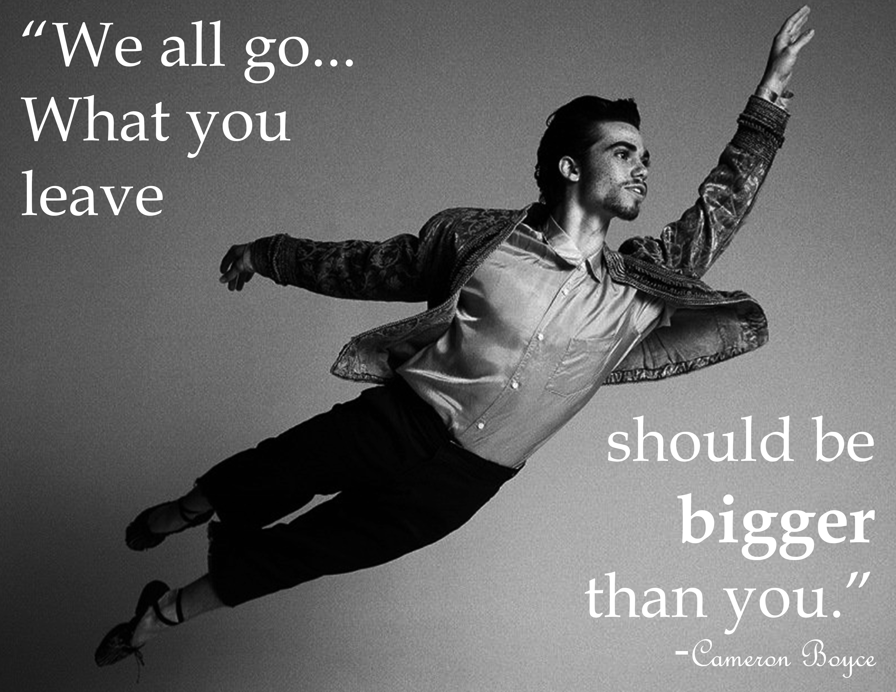
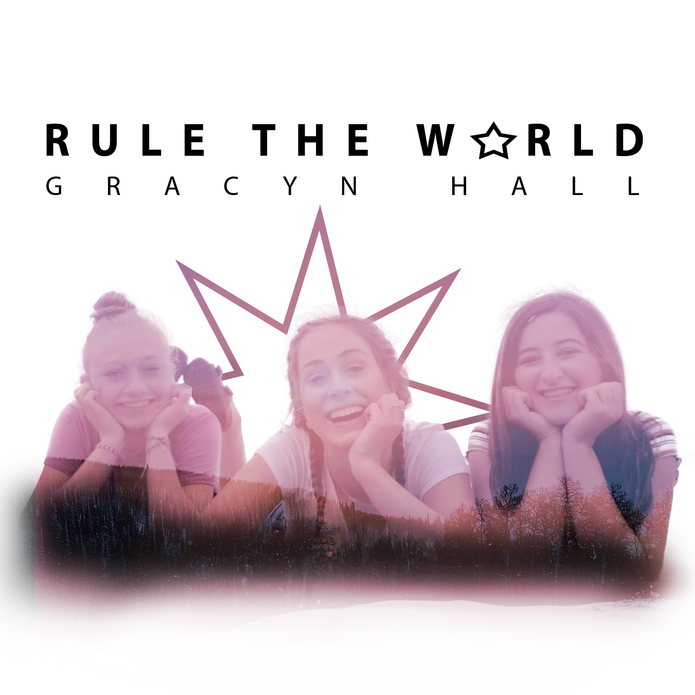
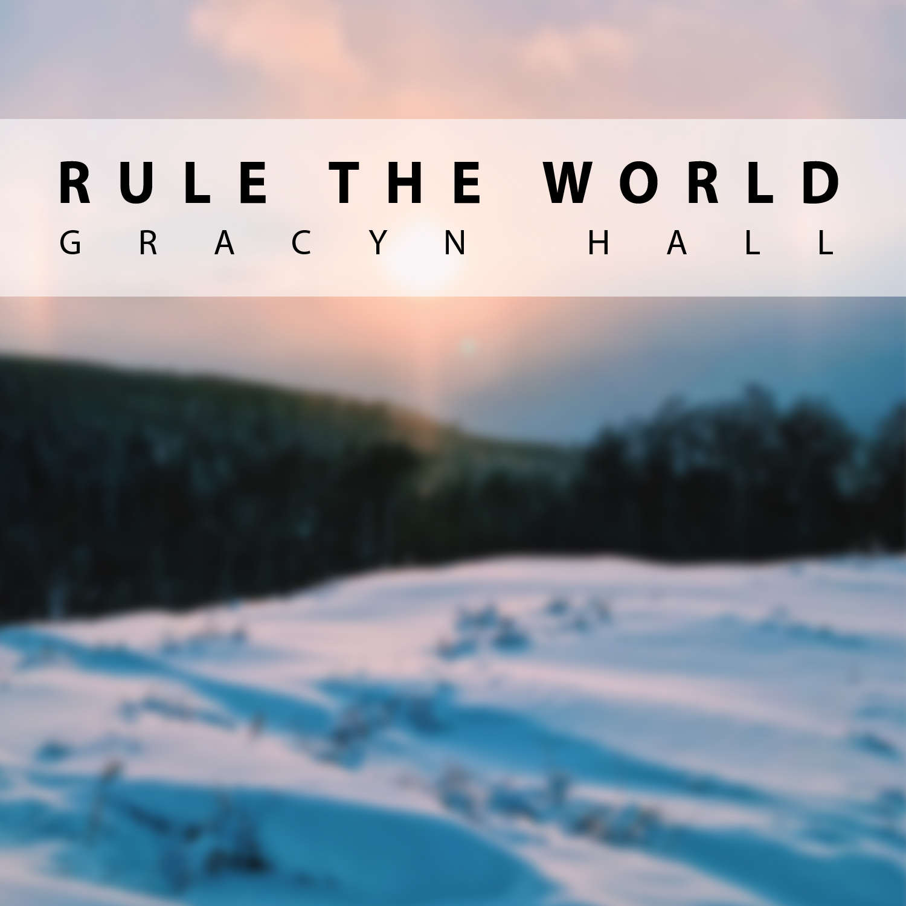

Image Gallery
 







These images were created by Gracyn Hall using Photoshop and Illustrator. The video below is a video I created in order to spread awareness of cancer and the Leukemia and Lymphoma Society, where I am a member of the AAction Team for this year's Student of the Year campaign.